Biblioteca Farō
Libri di tutti, pronti da ascoltare
Una piccola biblioteca di libri liberi da diritti, preparati da noi per essere letti bene: pagine pulite, capitoli in ordine, niente che distragga.
In Farō Reader li trovi toccando Aggiungi libro e poi Dalla Biblioteca Farō. Da qui puoi scaricarli come file EPUB e leggerli con qualsiasi programma.
I libri
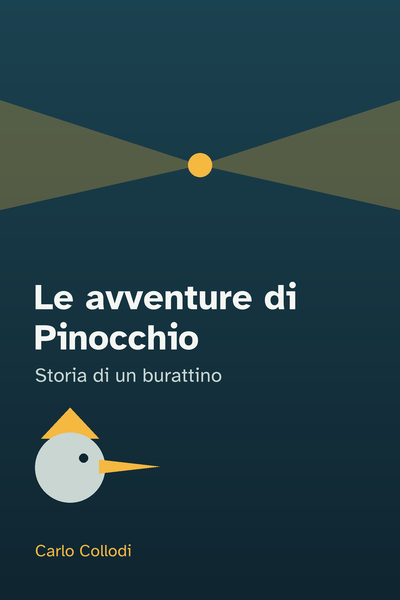
Le avventure di Pinocchio Carlo Collodi · 4 h 49 min di ascolto Scarica EPUB (198 kB)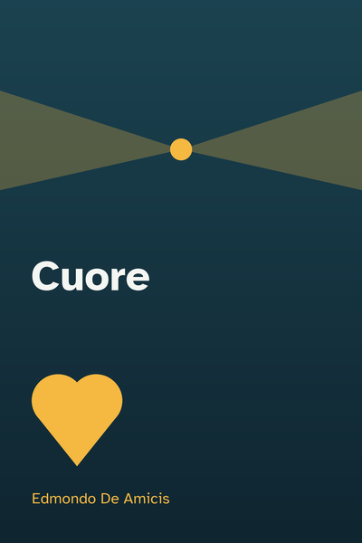
Cuore Edmondo De Amicis · 9 h 39 min di ascolto Scarica EPUB (304 kB)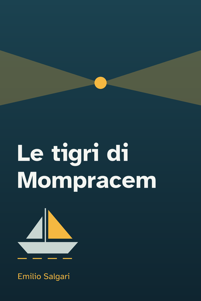
Le tigri di Mompracem Emilio Salgari · 10 h 44 min di ascolto Scarica EPUB (309 kB)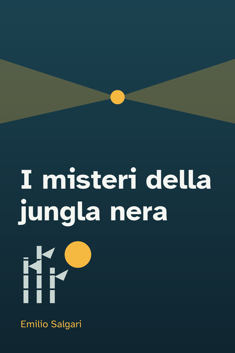
I misteri della jungla nera Emilio Salgari · 11 h 11 min di ascolto Scarica EPUB (334 kB)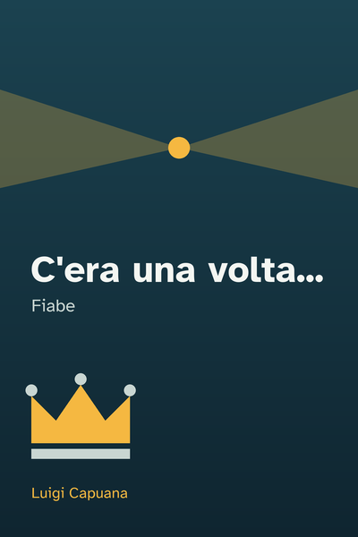
C'era una volta... Luigi Capuana · 3 h 48 min di ascolto Scarica EPUB (141 kB)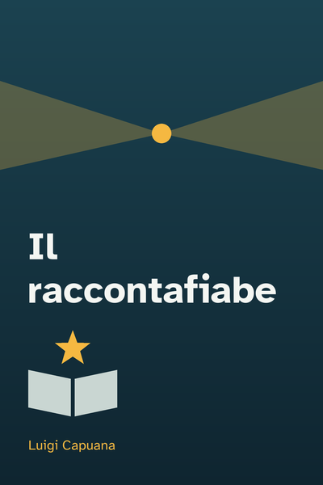
Il raccontafiabe Luigi Capuana · 4 h 26 min di ascolto Scarica EPUB (150 kB)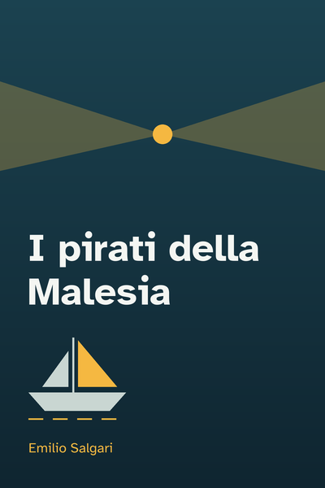
I pirati della Malesia Emilio Salgari · 7 h 17 min di ascolto Scarica EPUB (235 kB)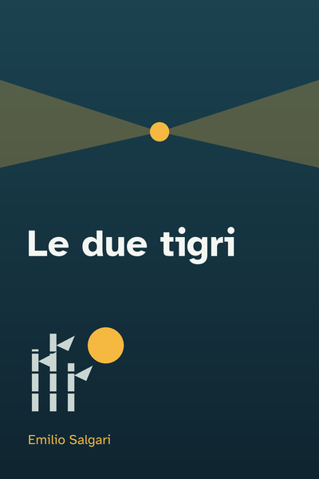
Le due tigri Emilio Salgari · 11 h 11 min di ascolto Scarica EPUB (308 kB)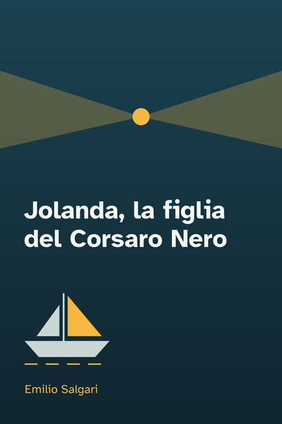
Jolanda, la figlia del Corsaro Nero Emilio Salgari · 11 h 21 min di ascolto Scarica EPUB (321 kB)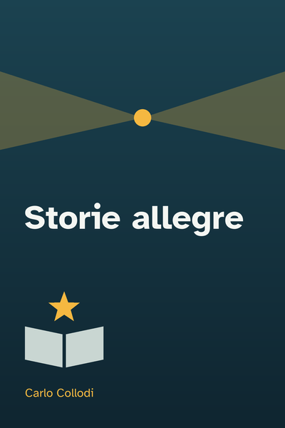
Storie allegre Carlo Collodi · 4 h 17 min di ascolto Scarica EPUB (145 kB)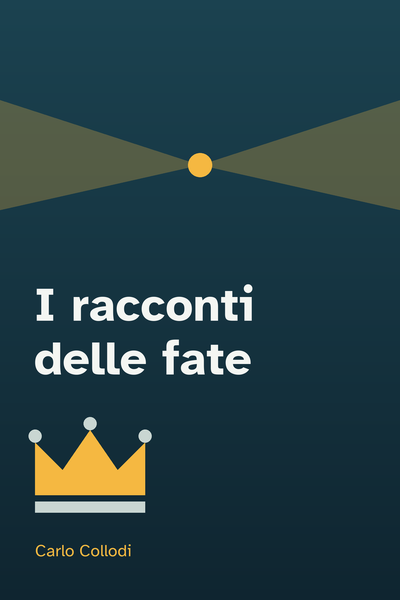
I racconti delle fate Carlo Collodi · 9 h 25 min di ascolto Scarica EPUB (251 kB)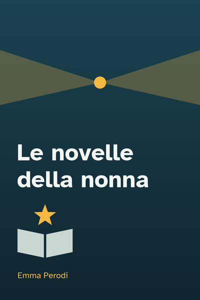
Le novelle della nonna Emma Perodi · 23 h 53 min di ascolto Scarica EPUB (580 kB)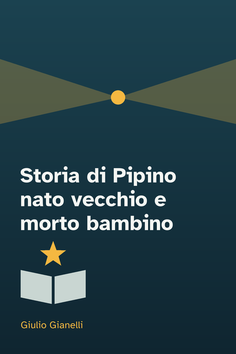
Storia di Pipino nato vecchio e morto bambino Giulio Gianelli · 3 h 09 min di ascolto Scarica EPUB (163 kB)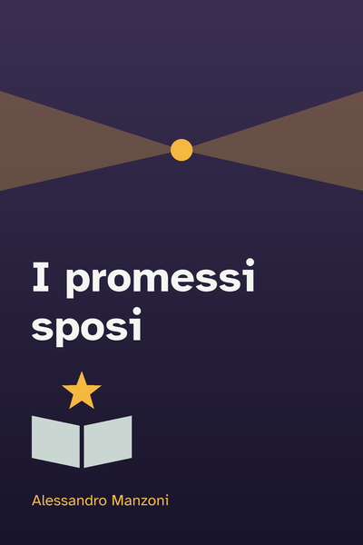
I promessi sposi Alessandro Manzoni · 25 h 55 min di ascolto Scarica EPUB (628 kB)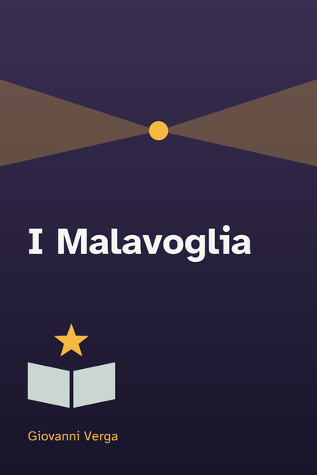
I Malavoglia Giovanni Verga · 9 h 57 min di ascolto Scarica EPUB (251 kB)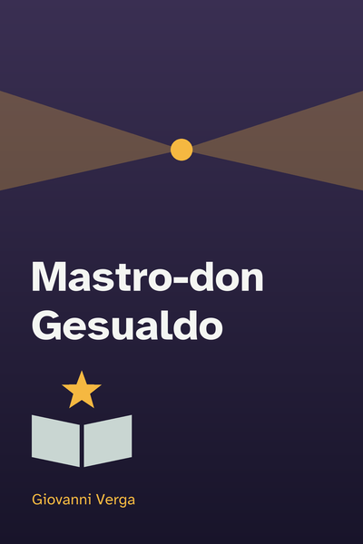
Mastro-don Gesualdo Giovanni Verga · 13 h 00 min di ascolto Scarica EPUB (352 kB) Vita dei campi Giovanni Verga · 5 h 13 min di ascolto Scarica EPUB (169 kB)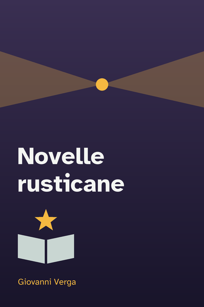
Novelle rusticane Giovanni Verga · 4 h 26 min di ascolto Scarica EPUB (161 kB)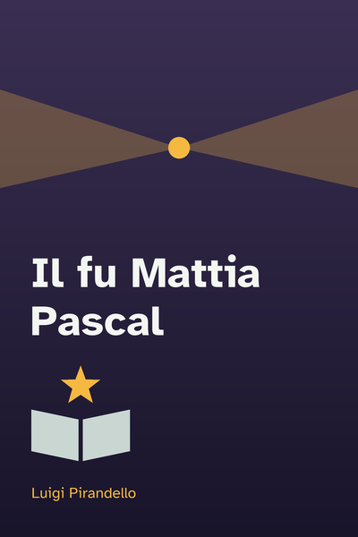
Il fu Mattia Pascal Luigi Pirandello · 8 h 56 min di ascolto Scarica EPUB (265 kB)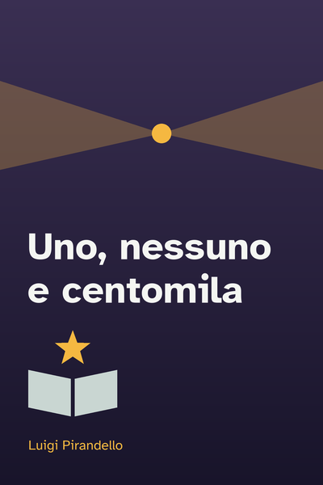
Uno, nessuno e centomila Luigi Pirandello · 5 h 17 min di ascolto Scarica EPUB (218 kB)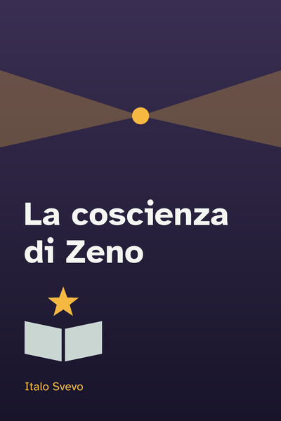
La coscienza di Zeno Italo Svevo · 11 h 48 min di ascolto Scarica EPUB (295 kB)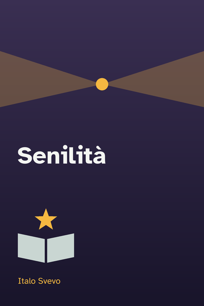
Senilità Italo Svevo · 8 h 04 min di ascolto Scarica EPUB (216 kB)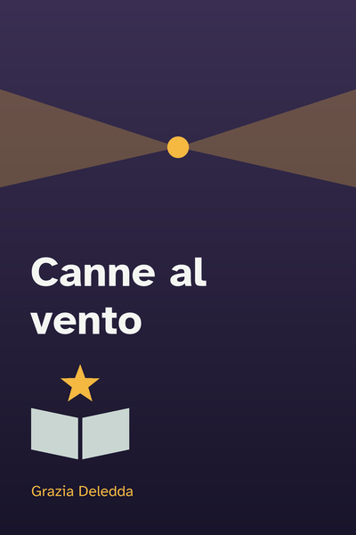
Canne al vento Grazia Deledda · 6 h 55 min di ascolto Scarica EPUB (213 kB) Piccolo mondo antico Antonio Fogazzaro · 13 h 09 min di ascolto Scarica EPUB (348 kB)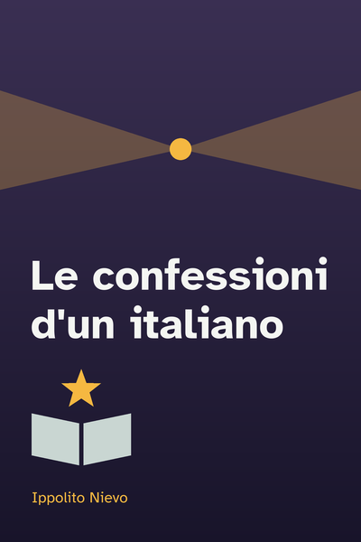
Le confessioni d'un italiano Ippolito Nievo · 39 h 58 min di ascolto Scarica EPUB (899 kB)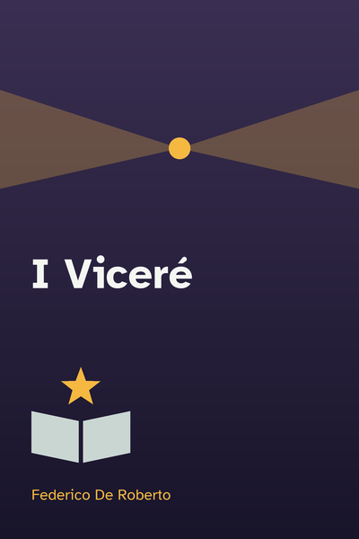
I Viceré Federico De Roberto · 25 h 29 min di ascolto Scarica EPUB (580 kB)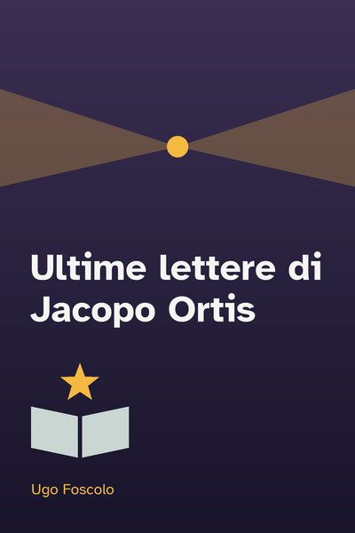
Ultime lettere di Jacopo Ortis Ugo Foscolo · 5 h 39 min di ascolto Scarica EPUB (184 kB)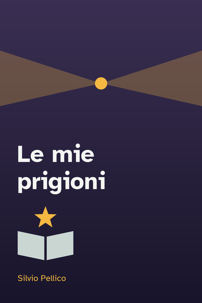
Le mie prigioni Silvio Pellico · 6 h 18 min di ascolto Scarica EPUB (250 kB)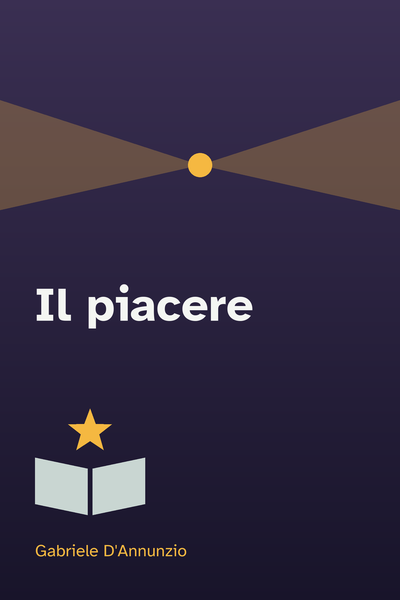
Il piacere Gabriele D'Annunzio · 12 h 36 min di ascolto Scarica EPUB (323 kB)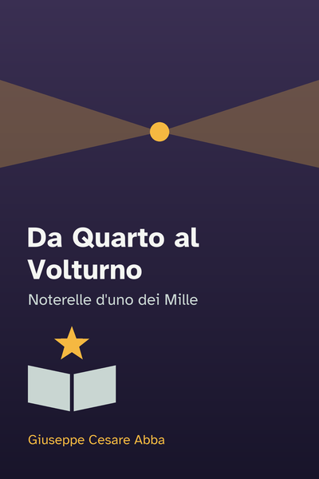
Da Quarto al Volturno Giuseppe Cesare Abba · 5 h 09 min di ascolto Scarica EPUB (190 kB)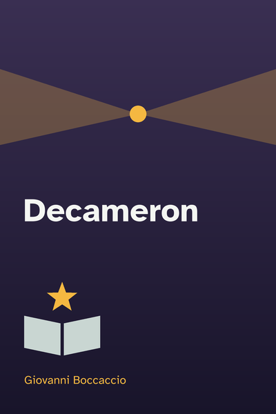
Decameron Giovanni Boccaccio · 30 h 42 min di ascolto Scarica EPUB (743 kB)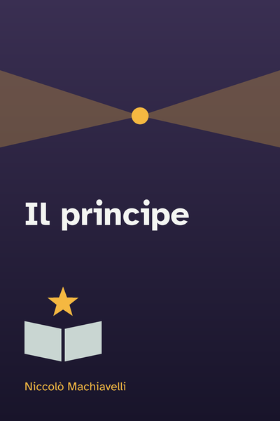
Il principe Niccolò Machiavelli · 3 h 15 min di ascolto Scarica EPUB (127 kB)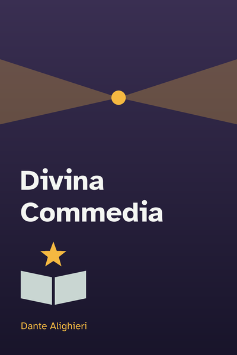
Divina Commedia Dante Alighieri · 10 h 54 min di ascolto Scarica EPUB (386 kB) Orlando furioso Ludovico Ariosto · 29 h 28 min di ascolto Scarica EPUB (768 kB)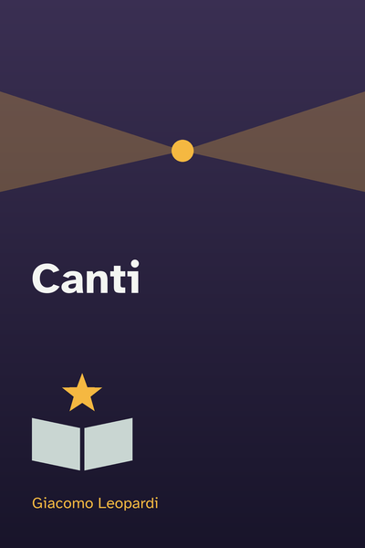
Canti Giacomo Leopardi · 2 h 42 min di ascolto Scarica EPUB (131 kB)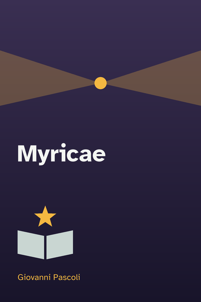
Myricae Giovanni Pascoli · 1 h 56 min di ascolto Scarica EPUB (170 kB)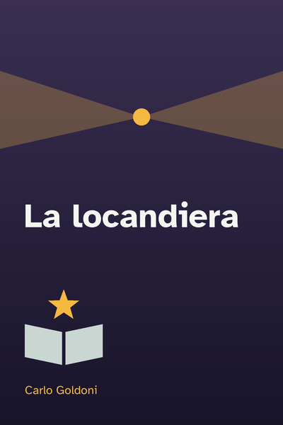
La locandiera Carlo Goldoni · 2 h 32 min di ascolto Scarica EPUB (137 kB)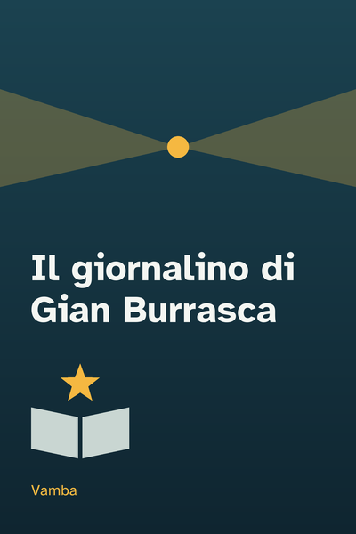
Il giornalino di Gian Burrasca Vamba · 8 h 28 min di ascolto Scarica EPUB (299 kB)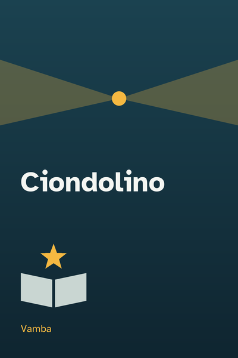
Ciondolino Vamba · 6 h 10 min di ascolto Scarica EPUB (202 kB)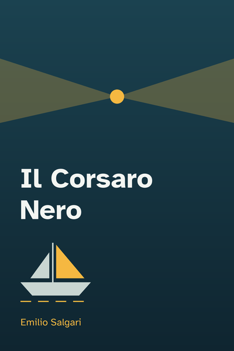
Il Corsaro Nero Emilio Salgari · 12 h 02 min di ascolto Scarica EPUB (326 kB)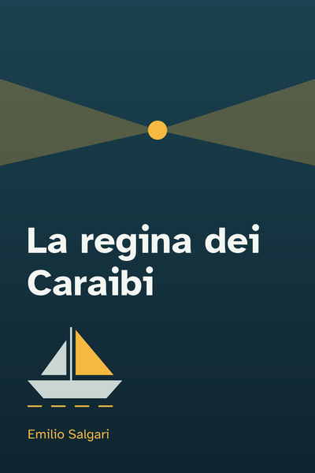
La regina dei Caraibi Emilio Salgari · 11 h 05 min di ascolto Scarica EPUB (311 kB)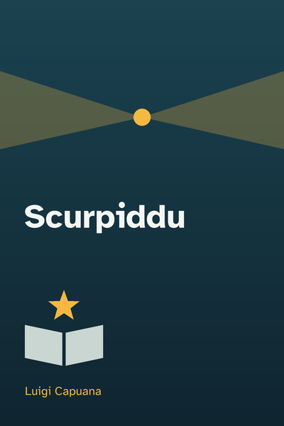
Scurpiddu Luigi Capuana · 3 h 23 min di ascolto Scarica EPUB (130 kB)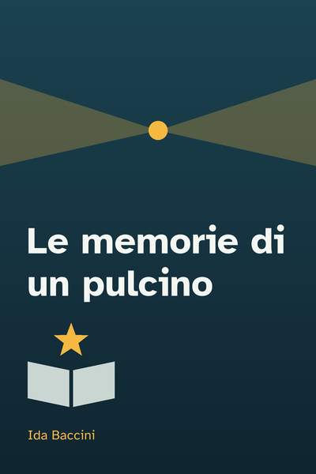
Le memorie di un pulcino Ida Baccini · 4 h 56 min di ascolto Scarica EPUB (186 kB)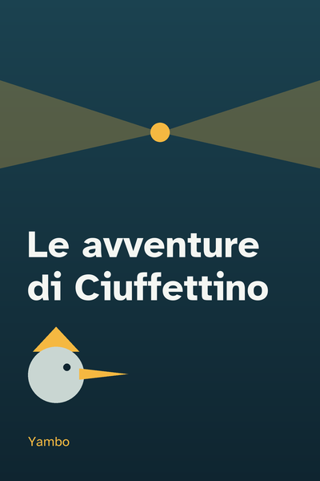
Le avventure di Ciuffettino Yambo · 4 h 17 min di ascolto Scarica EPUB (179 kB)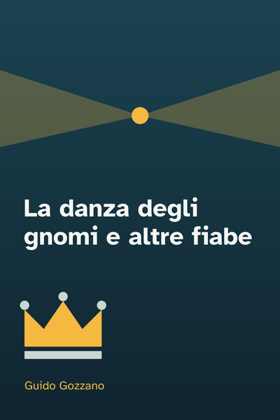
La danza degli gnomi e altre fiabe Guido Gozzano · 2 h 20 min di ascolto Scarica EPUB (119 kB)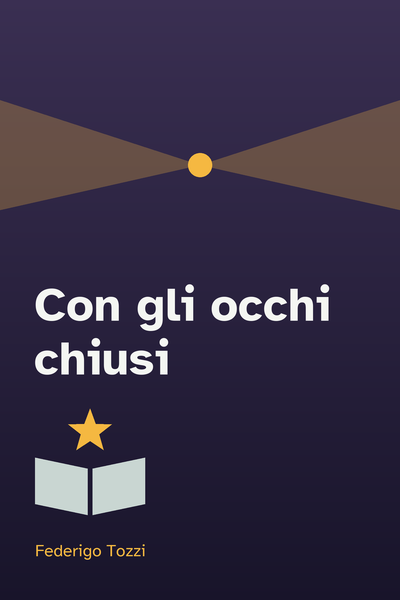
Con gli occhi chiusi Federigo Tozzi · 5 h 31 min di ascolto Scarica EPUB (171 kB)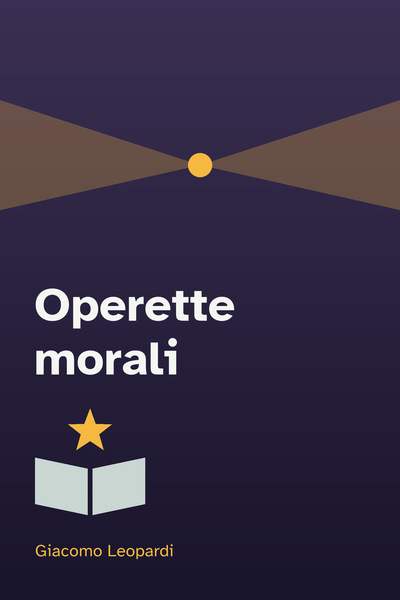
Operette morali Giacomo Leopardi · 10 h 03 min di ascolto Scarica EPUB (282 kB)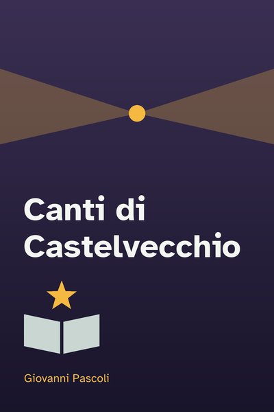
Canti di Castelvecchio Giovanni Pascoli · 2 h 31 min di ascolto Scarica EPUB (166 kB)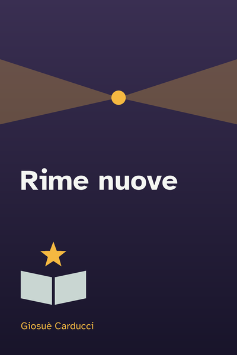
Rime nuove Giosuè Carducci · 2 h 09 min di ascolto Scarica EPUB (151 kB)Da dove vengono
Sono opere di pubblico dominio. Il testo viene dalle edizioni elettroniche dell'associazione Liber Liber, che ringraziamo insieme ai suoi volontari. Impaginazione, copertina e pagina dei crediti sono nostre; l'ultima pagina di ogni libro dice da quale edizione a stampa è tratto.
Se trovi un errore in un libro, segnalacelo.